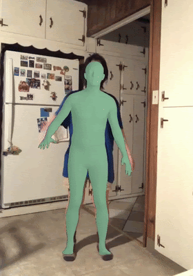

Abstract
It is critical to lower the high barrier to entry for controlling animation rigs, as software such as Blender are very difficult to use for beginners (like ourselves). Our project will allow a person to film a video of themselves and map their behavior to an animation with a character rig. Specifically, the goal of our project is to transfer human motion onto a skinned, rigged animated character. To do this, we first extract a sequence of 3D skeletons from a video using an out of the box deep human pose estimator. Next, we preprocess the skeleton by smoothing the motion and making it compatible with the pretrained networks from Skeleton-Aware Networks for Deep Motion Retargeting, which we use to then remap our skeleton to the animated character.
Background
VIBE is the state of the art deep learning method to estimate 3D human meshes from videos, and utilizes a motion discriminator to achieve realistic human dynamics.
This deep motion retargeting paper achieves successful motion transfer across two different skeletons by utilizing a novel skeletal convolution to encode and decode the skeleton motions.
Technical Approach Details

-
Apply VIBE to our own test video
For this project, our plan was to translate human motions in in-the-wild videos into custom animation rigs. We set up our local environments to run the state-of-the-art 3D human pose estimator (VIBE, Video Inference for Human Body Pose and Shape Estimation) on our own input videos. We also modified VIBE to produce constant shape parameters across frames for easier rigging by taking the mean across frames. -
Preprocess bvh file
Deep Motion Retargeting requires a bvh file as input; however, VIBE outputs a pkl file with 3D mesh and joint data. Fortunately, the VIBE repository also contains a pkl-to-fbx conversion script, so we used this to generate an fbx file. Next we used blender to convert fbx to bvh and preprocess the motion capture data. We utilized Blender’s automatic bone orientation, applied motion smoothing, and adjusted the mesh topology to match the meshes from Deep Motion Retargeting so that our skeletons are compatible with their pretrained networks. -
Apply deep motion retargeting to our bvh file
To apply DeepMotionEditing to our skeletons, we needed to integrate our skeleton’s format into the repo. To do this, we added the joint names of our skeleton into a hardcoded list of skeleton formats. We excluded any extraneous joints like fingers. Next, we made a folder for a new character type in the repo’s dataset and added our bvh files. Then we ran the data preprocessing script, which calculates the average movements of each character as npy files for the neural network to use. Because we only have a small set of bvh files, the average motions of our character are very noisy, so for our skeleton format we instead use the average movements of a realistically proportioned character like Aj. Finally, we apply the repo’s pretrained networks to our skeletons to transfer our motion to a new skeleton and save the output skeleton as a new bvh file. -
Rendering Character Mesh
We utilize a Blender script that applies "skinning" to the skeletons outputted from DeepMotionEditing. We first download the fbx file that corresponds to the targeted character. Then we can obtain a skinned animation by running the Blender script. We found that the Blender script does not work well for all fbx files so we also added some manual skinning. We do this by manually aligning the mesh and skeleton of the retargeted character and using Blender’s automatic weights function. That way, the skeleton will match the skin and will result in the rendered animation.
Problems/bugs encountered
Lessons Learned
This project emphasized to us the importance of starting early and building up projects one step at a time. We began working relatively late and felt constantly short on time. A big reason for this is that we ran into numerous issues running DeepMotionEditing with a new skeleton format and spent many hours debugging. Thankfully, we eventually identified and addressed all the incompatibilities between our raw VIBE output and the DeepMotionEditing.
Results
VIBE Outputs
The Videos Below show 4 different human motion videos in different settings and VIBE’s outputted human mesh.
|
|

|
|
|

|
Deep Motion Retargetting Outputs
The Videos Below show 4 different character meshes outputted by DeepMotionEditing.
|
|
|
|
|
|

|
|
|

|